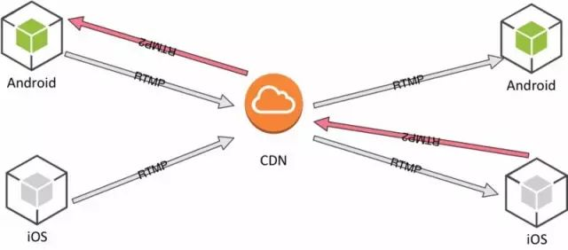
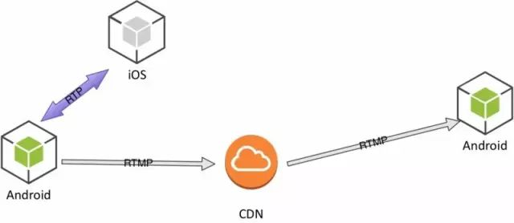

RTMP、WebRTC、UDP 三种互动直播方案的优劣比较
#扫描上方二维码进入报名#
据《 2017 年中国直播行业研究报告》显示，直播行业用户人数达到了 4.2 亿，同比增速超过 50%，整体直播市场的总营收达到 304.5 亿元，比去年同期增长近 39%。
直播作为一种新兴社交方式，已然成为一项互联网基础应用，也成为技术大牛们探索更高效轻量的技术方案的新阵地。
由于用户对社交互动的强烈需求，“互动直播”已成为直播发展趋势。通过视频连麦，用户之间可以进行视频互动，达到更深层次的超越语言文字的交流。
那么互动直播是怎样实现的呢？主要有以下几种可以实现的技术方案：
基于RTMP 和 CDN 技术的连麦
基于 WebRTC（P2P）与旁路直播的连麦
基于低延时网络的连麦
那这三种技术方案该如何权衡选择呢？它们又有何优劣呢？
基于 RTMP 技术的连麦

当有连麦者时，则主播端和连麦端，都分别推一路 RTMP 流到 CDN，CDN 再将这两路 RTMP 流发送给观众端，观众端将两路 RTMP 流合成为一个画面。
RTMP 是基于 TCP 的标准协议，与 CDN 架构兼容，对客户来说在现有单向直播架构上，接入成本比较低，但是缺点也很明显：
主播与连麦者交互时，声音会产生干扰，形成回音；
播与连麦者进行交互，在 CDN 中传输延时较大；
观众端要接收两条视频流，带宽、流量消耗过大，并且两路视频流解码播放，耗费CPU等资源也非常多。
基于 WebRTC 方式的连麦

WebRTC 是 Google公司的开源技术，降低了音视频通信的接入门槛。也有公司采用该项技术实现连麦。主播与连麦 用户采用 P2P 方式进行交互，然后在主播端进行混流，然后在 CDN 上进行混流，发送到观众端。
WebRTC 的好处在于用户体验好，不需要安装东西，分享一个链接就可以看。
但这套方案需要主播端上传两路视频：一路 P2P 与连麦者进行交互，一路使用 RTMP 推到 CDN。还要下载一路视频：连麦者P2P发送过来的交互数据。对主播端带宽需求较高。
另外，主播端需要进行多路视频的编码、解码，又对主播端设备配置要求较高。而由于主播端和连麦者经过 CDN 合并成一路，无法实现主播端和连麦者视频大小窗口切换。
基于低延时网络的连麦
基于 UDP 的私有协议与 RTMP 相比具有先天的优势，它是面向无连接的，避免了 TCP 做网络质量控制所需要的开销，能够做到比较低的延迟。
但是私有协议的兼容性不好，如果采用该方案也需要解决一系列的技术问题：
UDP 的可靠性传输如丢包重传、网络抖动的处理
网路拥塞的控制算法
在全球节点的部署与智能调度
各种端的全面支持
而以上问题都是在短期内很难实现的。
基于 RTMP 和 CDN 技术的连麦方案，对于产品来说非常可靠稳定，但可靠的同时延时也在增大，且使用两路 RTMP 推流拉流既耗带宽又耗 CPU。基于WebRTC P2P方式的连麦，接入门槛低，用户体验好，却对主播端带宽及设备配置要求较高。基于低延时网络的连麦看起来很美，但私有协议的兼容性令人头大。
关于互动直播实现，除了以上这三种技术方案，还有其他技术方案与实践之道吗？
4 月 21 日（周六），开源中国线下技术沙龙—— 源创会（武汉站）邀请到了胡斌（容联音视频媒体平台服务端负责人）、凌建发（又拍云 PrismCDN 项目负责人）、冼牛（即构科技资深技术专家）、武俊敏（图鸭科技创始）、张天若（优酷视频VR技术leader）五位行业大牛。
以视频直播技术为核心，围绕互动直播技术的思考与实践、低延时的 P2P HLS 直播技术实践、连麦直播技术在微信小程序上的探索和实践、视频压缩目前的情况和进展、使用阿里云 VR 技术构建优酷流畅清晰 VR 直播体验，5 个前沿直播技术主题，与你进行一场关于视频直播，面对面的技术对话。
扫码报名，与业内大咖和更多小伙伴当面交流。
注：以上内容有引用和参考互动直播的技术细节和解决方案实践经验谈 via 张发财
链接：
https://www.cnblogs.com/zhangxiaoliu/archive/2017/03/20/6586575.html